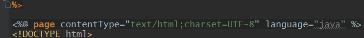

Allgemeine Informationen zum Projekt Kaffeemaschine
Das Projekt Kaffeemaschine entwickelte sich aus dem einzigen Grund um die Objekt Orientierte
Programmierung genauer kennenzulernen.
Worin liegt der Fokus in der Objekt Orientierten Programmierung?
Der Fokus der Objekt Orientierten Programmierung liegt darin Objekte genau wie in der Realität als
Programmcode zu schreiben.
Einer dieser Objekt Orientierten Programmiersprachen, mit der auch dieses Projekt entwickelt wurde, ist Java von Sun microsystems (durch Oracle Corporation übernommen).
Einer dieser Objekt Orientierten Programmiersprachen, mit der auch dieses Projekt entwickelt wurde, ist Java von Sun microsystems (durch Oracle Corporation übernommen).
Was ist die Objekt Orientierte Programmierung im
Allgemeinen?
Mit der
Genau wie in der Realität, werden in der OOP auch Objekte erstellt mit Attributen (Eigenschaften).
Eine Klasse könnte zum Beispiel der Entwurf für eine Währung sein, worin dann die allgemeinen Eigenschaften beschrieben werden. Diese Klasse wäre nun wiederverwendbar und könnte als Objekt im Zentralen Programmcode erstellt und aufgerufen werden. Hinzu könnte man nun weitere Instanzen der Klasse erstellen für zum Beispiel weitere Währungen ohne dabei die originale Klasse zu verändern.
OOP
wird Programmcode und Daten wiederverwendbar und übersichtlich in sogenannte Objekte gekapselt.Genau wie in der Realität, werden in der OOP auch Objekte erstellt mit Attributen (Eigenschaften).
Eine Klasse könnte zum Beispiel der Entwurf für eine Währung sein, worin dann die allgemeinen Eigenschaften beschrieben werden. Diese Klasse wäre nun wiederverwendbar und könnte als Objekt im Zentralen Programmcode erstellt und aufgerufen werden. Hinzu könnte man nun weitere Instanzen der Klasse erstellen für zum Beispiel weitere Währungen ohne dabei die originale Klasse zu verändern.
Unterschiede zwischen der Objekt Orientierten
Programmierung und der Funktionalen Programmierung
Während man mit der Objekt Orientierten Programmierung beschreibt wie etwas (Code) auszuführen
ist,
wird hingegen in der Funktionalen Programmierung beschrieben was auszuführen (Code) ist.
Die Objekt Orientierte Programmierung hingegen ist eher auf die Details des Entwurfes der Klasse(n) fokusiert.
In der Funktionalen Programmierung werden Funktionen erstellt um Problem zu lösen.
Dazu werden die Funktionen in Funktionalen Programmiersprachen meistens eher im mathematischen Sinne benutzt.
Nun folgt eine Auflistung einiger Funktionalen Programmiersprachen:
Die Objekt Orientierte Programmierung hingegen ist eher auf die Details des Entwurfes der Klasse(n) fokusiert.
In der Funktionalen Programmierung werden Funktionen erstellt um Problem zu lösen.
Dazu werden die Funktionen in Funktionalen Programmiersprachen meistens eher im mathematischen Sinne benutzt.
Nun folgt eine Auflistung einiger Funktionalen Programmiersprachen:
- Common Lisp
- F# und OCaml
- Haskell
- Python
- Scala
- Java (seit Java 8)
- Swift
- XSLT
Ablauf des Projektes Kaffemaschine
- Zuerst wurde eine reale Kaffeemaschine untersucht. Während der Untersuchung wurde herausgestellt
,welche Komponente eine Kaffeemaschine besitzt.
Vom Behälter bis zu den Knöpfen wurde jedes einzelne Objekt notiert und ihre Eigenschaften beschrieben.
Bevor es an die Entwicklung geht, musste zuerst ein Unified Modeling Language Diagramm gezeichnet werden.
Von den etlichen Arten an UML Diagrammen die es zur Auswahl gibt ,sollte das sogenannte Klassendiagramm auf alle Fälle mehr als ausreichend sein. - Nachdem das Klassendiagramm fertig gezeichnet wurde, war man nun bereit dem Ausbilder das Diagramm zu zeigen und sofern es in Ordnung war auch die ersten Zeilen des Programms zu schreiben.
- Zuerst wurde im IntelliJ das Projekt als ein Java Projekt erstellt.
Dazu wird unter dem Reiter Java während der Projekt Erstellung kein Framework ausgewählt.
- Nachdem das Projekt generiert wurde, sollte die Erstellung der jeweiligen Klassen im UML
Diagramm
die Basis der Kaffemaschine aufbauen.
Nachdem alle Eigenschaften der Klassen definiert wurden, ging es auch mit der Logik der Maschine weiter. - Die "Machine" Klasse ist sozusagen die Zentraleinheit des
Projektes und sollte daher so beschrieben werden, wie auch wirklich eine Kaffeemaschine
aufgebaut ist.
Die Klasse trägt alle Behälter, Knöpfe und selbst die Rezepte.
Die Klasse Display dient als Ausgabe, daher sollten alle Ausgaben über das Display ausgeführt werden. - Zu guter Letzt wurde die Kaffeemaschine (also die Machine Klasse) in der Main Klasse als Objekt erstellt und per Eingabe über das IntelliJ Console Fenster wurde die jeweilige Taste "gedrückt".
- Zu dem Zeitpunk wurden keine Informationen gespeichert, das heißt sobald der Bohnenbehälter befüllt wurde und der Benutzer per Eingabe oder gewollt das Programm beendet wurde, dann wurden die Eingebenen Werte nicht gespeichert.
- Somit würde man die Kaffeemaschine nur temporär benutzen können.
Dieser Informationsverlust wurde zuerst übersehen, da es zu dem Zeitpunkt nur darum ging, eine Kaffeemaschine (objekt orientiert) zu entwickeln.
Im folgenden Bild sind alle Klassen, die für die erste Kaffemaschine benötigt werden zu sehen. - Wichtig ist noch anzumerken, dass die Klasse Specialeffects
optional ist.
Sie beinhaltet nur eine Reihe von Outputs ,welche als eine Art Animation in der Console zu sehen sind.
Somit hat die Klasse keinerlei Methoden oder Informationen die im Verlauf des Projektes von Nöten sind.
Im nächsten Bild sind alle Klassen und weitere Dateien zu sehen.
-
Aufgrund des vorherig genannten Informationsverlustes, des Verbesserungspotential und um die
Objekt Orientierte Programmierung weiterhin zu üben, wurde eine Zweite Kaffeemaschine
erstellt.
Hier wurde jedoch ein anderer Anlauf genommen als zuvor! Nun wurde auf die Klasse Containment, Deactivatable und Exit verzichtet. Hinzu kamen die Klasse PersistentData (Speicherung der Werte) und eine .properties Datei für Konstanten / Werte die bestehen bleiben (z.B.:Kapazität)
Bereits erkennbar ist, dass die neue Version der Kaffeemaschine deutlich kompakter aussieht.
Die erste Kaffeemaschine
Das erste Klassendiagramm:
Die Zweite Kaffeemaschine
Das zweite Klassendiagramm:
Anhand des selbst erstellten Klassendiagramms wurden die ersten Klassen in IntelliJ schnell und verständlich erstellt und aufgebaut bzw. definiert.
Sobald alle Klassen der Kaffeemaschine aufgebaut waren, ging es an die so genannte JSP Datei.
Dies kann einfach erledigt werden indem man mit der rechten Maustaste auf das Menü drückt und auf Scratch File klickt.
In dem Scratch File Menü, sollte nun eine Liste von Datei Endungen zu sehen sein.
Während des runterscrollens wird man auf eine .JSP fündig.
Wird dieses Feld ausgewählt, so sollte nun eine neue Datei erstellt werden.
Zuletzt muss die Run Configuration auf Tomcat umgestellt werden.
Dazu wird oben rechts im Drop-Down Menu "Edit Configuration" ausgewählt,
danach auf das grüne Plus Zeichen oben
links -> Tomcat -> Local -> Unter dem Drop Down Menü 'Application Server' wird falls bereits existierend 'Tomcat' ausgewählt, falls nicht dann muss der Tomcat Installations Ordner ausgewählt werden. Nun wurde mit Hilfe von HTML und CSS die Seite Schritt für Schritt aufgebaut.
Welche Hilfsmittel bzw. Programme und Konfigurationen wurden benutzt?
Grundsätzlich wurden folgende Programme benötigt um das Projekt zu vollenden:
| Überschrift | Beschreibung | Bedeutung |
|---|---|---|
|
Java JDK 8 (Java Development Kit) |
Das JDK (Java Development Kit) wird benötigt um das Geschriebene vom Entwickler zum sogenannten Bytecode zu übersetzen, welcher auf allen anderen Platformen und Rechnern anhand der JRE (Java Runtime Environment) ausgeführt werden kann. | beinhaltet die Java JRE 8 bereits (Java Runtime Environment) |
| IntelliJ IDEA Ultimate Edition(Entwicklungsumgebung) | Eine Entwicklungsumgebung bzw. IDE (Integrated Development Environment) ist notwendig um als Entwickler vernünftig zu arbeiten. IntelliJ ist nur eine von vielen IDE's, jedoch bietet es deutlich mehr Methoden und Möglichkeiten als z.B. Eclipse oder gar Notepad. IDE's bieten sehr nützliche Features wie Syntax Highlighting, Quelltextformatierung, Projekt Strukturierung und mehr... |
Verfügbar als Ultimate (30 Tage Testversion) oder Community Edition (Kostenlose, eingeschränkte
Version). Tomcat ist nur in der Ultimate Version verfügbar! |
| Apache Tomcat 8 | Apache Tomcat ist eine Software, die in der Lage ist eine JSP Datei, also eine Datei die teils aus der Programmiersprache Java und der Auszeichnungssprache HTML besteht, als zugreifbare Webseite zu starten. | Die Software "Apache XAMPP" wurde im Projekt benutzt, da die Software bereits Tomcat beinhaltet. |
| Git & Github (Optional) | Git in Verbindung mit Github.com wird benutzt um eventuell den Zustand des Projektes als Backup (Repository) auf Github.com hochzuladen. | Git & Github.com sind optional und dienen jediglich als Backup für das Projekt oder eine Iteration des Projektes. |
Wichtige Merkmale des Codes

Der Wichtigste Teil des Projektes ist die Logik!!
Wenn die Logik hinter der Haube nicht stimmt dann funktioniert nichts als End Resultat.
Sobald man das Projekt bzw. den Prozess startet dann müssen die Klassen und Methode wie am Fließband etwas einem Produkt / Objekt addieren.
Der Bauplan wird Schritt für Schritt innerhalb der Klassen bearbeitet und vollendet.
Am Ende muss das gewünschte Produkt auch erscheinen, welches der Benutzer zuvor angeklickt hat.
Innerhalb der Klasse Button wird der Entwurf eines Knopfes erstellt.

Der 1. Schritt beschreibt das Verfahren, worin 2 Variable initialisiert werden.
Die Zeile private Machine machine erstellt keine neue Maschine sondern gibt der Klasse eine Referenz zum Objekt Machine worauf dann der Knopf zugreifen kann.
Private besagt, dass was auch immer danach folgt, nur in der Klasse zugreifbar ist.
Wäre ja ziemlich sinnlos in einem Knopf, welcher nur ein Signal abgibt, eine komplette Maschine zu erstellen.
Der 2. Schritt legt einen sogenannten Constructor an.
Ein Constructor ist im einfachsten Sinne eine Methode welche aufgerufen wird sobald eine Instanz der Klasse erstellt wird.
Es wird immer ein Constructor erstellt, falls keiner vorhanden ist.
Anhand des Schlüsselwortes this wird
die Variable innerhalb der Klasse mit
dem Wert der nach dem Gleichzeichen folgt entsprechen.
Im 3. Schritt wird eine Methode namens
press() erstellt die aufgrund des void keinen
Wert zurückgibt.
Die Machine Referenz welche wir am Anfang definiert haben wird nun zum Einsatz gerufen, indem wir die pressed Methode der Klasse Machine aufrufen.
Hinzu wurde ein getter (Methode) erstellt ,um die Wert von der Variable buttonId von außen auszulesen, da die Variable ButtonId private ist. Dazu wird in den Klammern der benötigte Parameter übergeben. In dem Falle wird ein Button Objekt benötigt, somit können wir mit this den Button selbst übergeben.
Einfacher gesagt:
Wir erstellen den Bauplan für einen Knopf in der wir eine Methode erstellen welche, sobald sie aufgerufen wird, in der Klasse Machine eine Methode aufruft und die Klasse Button selbst übergibt da die Methode pressed(); einen Knopf als Parameter benötigt.
Die Erklärung zuvor ist in so gut wie allen Klassen zu finden mit ein paar Ausnahmen.
In der Klasse Machine existieren Methoden, welche bestimmte
überprüftungen ausführen um den Status der Behälter vorab zu überprüfen.

Java Server Pages sind Webseiten die aus Java Anweisungen und HTML Strukturen bestehen.
Die Seiten werden jedoch Generiert wie z.B.: Hotel- und Flugbuchungs Webseiten. Diese Seiten werden sobald alle Anweisungen ausgeführt sind, weggeworfen (Alle Informationen werden wieder
auf Null gesetzt).
Deshalb ist es Sinnvoll Informationen in Form von (z.B.) Cookies oder Cache zu speichern.
Um Java Klassen in JSP zu importieren wird folgendes geschrieben:
<%@ page import="Package Pfad.Klasse" %>Exemplar:
<%@ page import="com.ifm.azubi.coffeemat.v2.Ingredient" %>
Sobald man alle Klasse importiert hat, fängt die JSP nun mit
<% an undendet mit
%>.Somit wird der Java Quelltext vom HTML Quelltext unterschieden.
Nun kann man seine Java Anweisungen aufschreiben, dennoch ist es schlau erstmal die HTML Struktur aufzubauen.
Dies gelingt indem man:
<%@ page contentType="text/html;charset=UTF-8" language="java"%>aufschreibt um dem nachfolgendem Dokument die benötigten Informationen
wie die Zeichencodierung und Sprachtyp übergibt. 
Es ist immer möglich im HTML Quelltext den Wert von zuvor geschriebenen
(
<% und %>) Java Variablen abzurufen.Dies erfolgt indem man an der gewünschten Stelle im HTML Code ein
<%= und dazu noch den Namen der Varaible, so wie man es
auch in Java schreiben würde, zu letzt wird noch folgendes angehängt %>.Fazit
Mit dem Projekt "Kaffeemaschine bzw. Coffeemat" wurde die Objekt Orientierte Programmierung an erster Stelle
als Lernziel gesetzt.
Neben der Objekt Orientierten Programmierung wurde das Erstellen von JSP bzw.
Java Server Pages erlernt, womit die Logik der Objekt Orientierten Programmierung visuell in einer HTML-Webseite dargestellt wurde.
Die JSP baute die Schnittstelle zwischen HTML und Java auf, ohne dabei selbst die Information bzw. die Logik des Java Programmes in die Webseite zu implementieren.
Neben der Objekt Orientierten Programmierung wurde das Erstellen von JSP bzw.
Java Server Pages erlernt, womit die Logik der Objekt Orientierten Programmierung visuell in einer HTML-Webseite dargestellt wurde.
Die JSP baute die Schnittstelle zwischen HTML und Java auf, ohne dabei selbst die Information bzw. die Logik des Java Programmes in die Webseite zu implementieren.